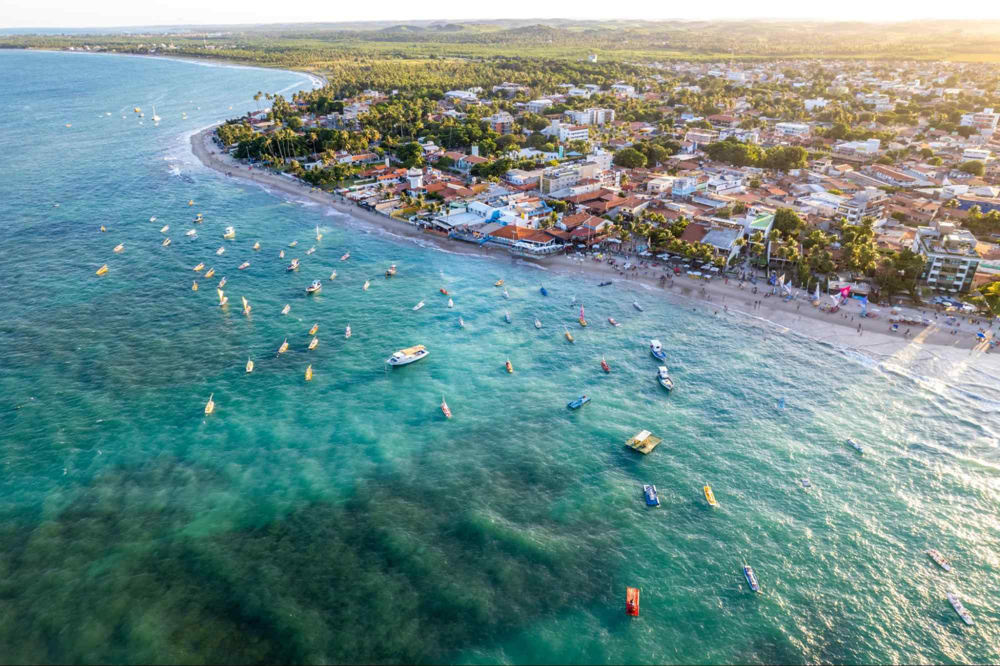
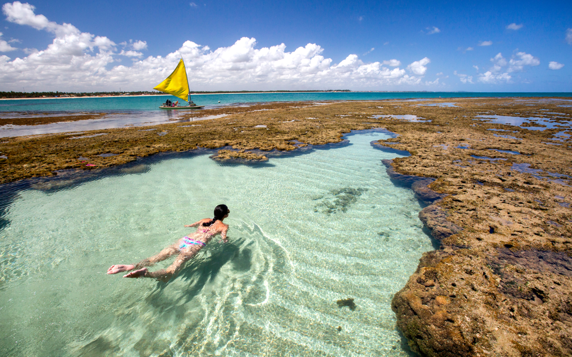

I don't know if i have found the best place to visit in a holiday but for sure Porto de Galinhas is the best place i have ever been.
Porto de Galinhas is a small city located in Pernambuco, aproximately 100 kilometers from the capital Recife. Porto de Galinhas have a lot of activities to do with your friends or relatives, tons of beaches to enjoy and filled with charismatics citizens that can answer your doubts without hesitation. Also the local dishes are delicious, expecially cocada, the best i have ever ate in my hole life.
One activitie that i hightly recommend is swimming with seahorses, they are majestic creatures and very beautiful too, but remember to not touch them, they are very sensitive. However the hotels are good too, with a great breakfast and big swimming pools, so if you want a place to have fun but also relax and admire the landscape, Porto de Galinhas is the place for you.
Porto de Galinhas is a small city located in Pernambuco, aproximately 100 kilometers from the capital Recife. Porto de Galinhas have a lot of activities to do with your friends or relatives, tons of beaches to enjoy and filled with charismatics citizens that can answer your doubts without hesitation. Also the local dishes are delicious, expecially cocada, the best i have ever ate in my hole life.
One activitie that i hightly recommend is swimming with seahorses, they are majestic creatures and very beautiful too, but remember to not touch them, they are very sensitive. However the hotels are good too, with a great breakfast and big swimming pools, so if you want a place to have fun but also relax and admire the landscape, Porto de Galinhas is the place for you.

